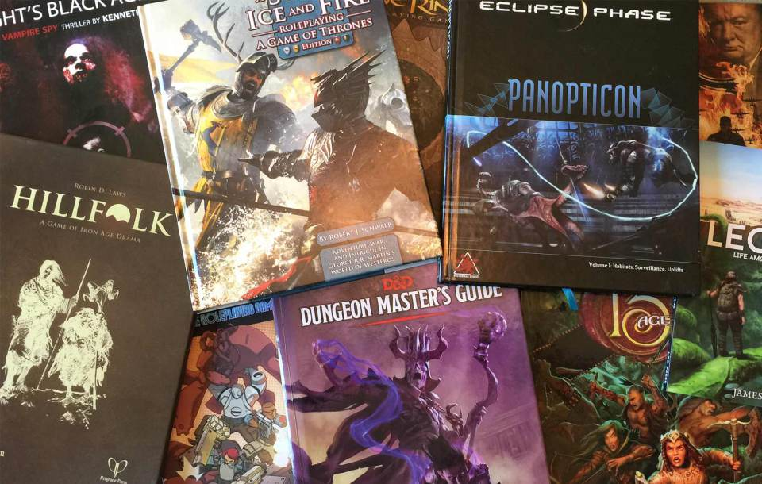
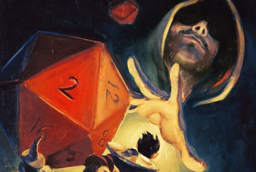

CZYM JEST GRA FABULARNA?
Gra fabularna (inaczej RPG, z ang. role-playing game, nieraz zwana grą wyobraźni, potocznie erpegiem lub rolplejem) – gra towarzyska oparta na narracji, w której gracze (od jednego do kilku) wcielają się w role fikcyjnych postaci. Cała rozgrywka toczy się zazwyczaj w fikcyjnym świecie, istniejącym tylko w wyobraźni grających. Jej celem na ogół jest rozegranie gry według zaplanowanego scenariusza i osiągnięcie umownie określonych lub indywidualnych celów, przy zachowaniu wybranego zestawu reguł, zwanego mechaniką gry.
Klasyczną grę fabularną można porównać do teatru improwizacji, w którym osoba prowadząca (zwana mistrzem gry) odgrywa rolę autora scenariusza, reżysera, narratora i zazwyczaj aktora ról postaci drugoplanowych. Natomiast gracze, czyli osoby biorące udział w grze, są aktorami pierwszoplanowymi, nieznającymi wszakże scenariusza i zmuszonymi improwizować oraz reagować na sytuacje, jakie stawia przed nimi mistrz gry. Jeżeli graczy jest wielu, mogą dobierać się w drużyny. Natomiast jeżeli w rozgrywce bierze udział wyłącznie jeden gracz, mistrz gry organizuje tzw. solówkę.
Cała rozgrywka toczy się w ramach spotkań – sesji – odbywających się w odpowiednich pomieszczeniach. Rozgrywka jest konstruowana prawie wyłącznie w oparciu o słowne opisy, czasem wspomagane muzyką lub taktyczną planszą. Mistrz gry opisuje graczom ich otoczenie i akcje wykonywane przez bohaterów niezależnych, gracze natomiast opisują czynności wykonywane przez ich postaci. Do zadań mistrza gry należy również decyzja, które akcje podejmowane przez graczy osiągną zamierzone efekty, a które nie. Stopień dozwolonej identyfikacji między graczami a odgrywanymi przez nich postaciami – wypowiadanie się w pierwszej osobie, wykorzystanie rekwizytów, kontakt fizyczny z pozostałymi graczami – jest kwestią umowną i zależy wyłącznie od stopnia immersji (zanurzenia) graczy w opisywany świat gry.
Czym jest System?

System jest jednym z podstawowych pojęć w terminologii RPG. Zazwyczaj rozumie się go jako połączenie opisu świata z mechaniką gry, zawarte w jednym lub więcej podręcznikach. Opisuje miejsce, w jakim rozgrywa się akcja gry. Opis taki może sięgać od geografii, poprzez historię, socjologię, religię czy biologię, po obowiązujące w danym świecie prawa fizyki (nierzadko uwzględniające przekroczenie typowego ich pojęcia poprzez wprowadzenie magii lub zaawansowanego mistycyzmu). Skrupulatny opis świata pozwala na toczenie w nim różnorodnych typów rozgrywek, dlatego mistrzowie gry nierzadko decydują się na rozszerzanie podręcznikowych systemów w celu rozegrania konkretnych, złożonych scenariuszy. Jeżeli takich modyfikacji jest większa liczba, uzyskują miano systemów autorskich. Z drugiej strony, niektóre gry ograniczają opis świata do minimum, w ten sposób zachęcając graczy do wspólnego tworzenia świata.
Konwencje
Światy, w jakich toczą się akcje gier fabularnych można podzielić według konwencji, w których są utrzymane – podobnie jak dzieli się dzieła literackie. Istnieją systemy w konwencjach fantasy, science fiction, cyberpunk, horror, a także wzorowane (mniej lub bardziej dokładnie) na realiach historycznych wybranej epoki oraz na współczesności. Można też podzielić je według podejścia do odwzorowywania rzeczywistości, na przykład na systemy realistyczne i heroiczne.
Podręczniki i scenariusze
Reguły rządzące poszczególnymi systemami zwyczajowo zawarte są w podręcznikach, z których treścią (możliwie najdokładniej) powinni się zapoznawać zarówno gracze – przygotowując rolę, które będą odgrywać – jak również mistrz gry przygotowujący sesje. Na podstawie podręczników mistrz gry opracowuje scenariusz, który definiuje miejsce i czas akcji gry, jej cel, bohaterów oraz użyte rekwizyty[5]. Bardziej rozbudowane scenariusze mogą doczekać się wydania w formie dodatków do podręcznika gry, stanowiących rozszerzenie zasad, opisów i tematyki gry fabularnej.
Mechanika
Grę RPG można przyrównać do teatru kukiełkowego wielu aktorów. Gracz to aktor animujący swoją kukiełkę (postać), Mistrz Gry to scenarzysta i reżyser dbający o spójność przygody. Mechanika gry jest spoiwem, które pozwala na ujednoliconą interakcję wszystkich aktorów teatru w ramach wykreowanego przez Mistrza Gry świata (dając mu przy tym ograniczoną nad nim władzę). Więcej informacji o mechanice gry znajdziesz w zakładce Mechanika Gry RPGKim jest GM?

GM czyli Game Master (nazywany również Mistrzem Gry - MG) jest najważniejszą osobą w każdej sesji RPG. To on w głównej mierze odpowiada za klimat gry oraz wydarzenia w niej przedstawione, a także posiada pełną kontrolę nad całym światem przedstawionym w grze, z wyjątkiem postaci Graczy.
GM odpowiada za przygotowanie scenariusza rozgrywki, czyli niezwykłych historii, niebezpiecznych przygód, interesujących postaci niezależnych (NPC), oraz wszelkiego rodzaju spotkań czy zdarzeń, które pojawią się na drodze Graczy w trakcie rozgrywki.
GM jest narratorem, którego zadaniem jest słowna prezentracja świata gry oraz wszystkich akcji rozgrywających się na jego terenie, a także w pewnym sensie Graczem, sterującym zachowaniem wszystkich napotkanych przez pozostałych członków rozgrywki postaci NPC.
Kim jest Gracz?
Najprościej to ująć tak: Gracz jest dokładnie tym, kim chce być.
Wymaga to jednak pewnego sprecyzowania, a także większej szczegółowości w opisie. Gracz jest w świecie gry postacią (bohaterem gry), której zachowaniem steruje. Właściwie ta definicja nie różni się zbytnio od np. gracza gier komputerowych, lecz w grach Fabularnych Gracz posiada niemal absolutną kontrolę nad swoją postacią. Jako, że cała rozgrywka prowadzona jest właściwie w wyobraźni wszystkich uczestników Gry, istnieją jedynie dwa ograniczenia, które mówią co wolno, a czego nie wolno Graczowi deklarować jako akcji swojego bohatera. Są nimi Mistrz Gry (MG, lub z angielskiego GM - Game Master), oraz system gry.